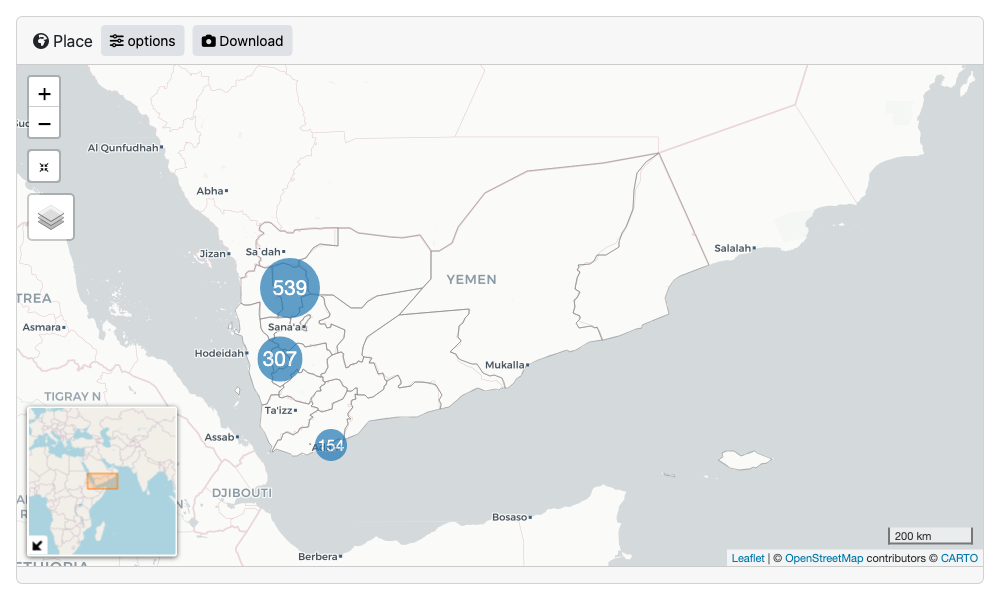
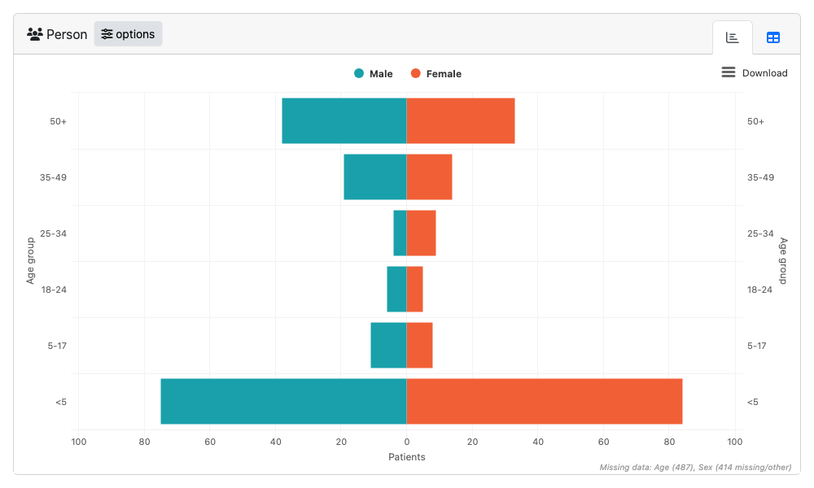

Global options
epishiny sets the following global options on start up
that are used across various modules. You can change any of these to
suit your needs via the options() function as below. Make
sure you do this after epishiny has been loaded
for the changes to take effect.
# first load libraries
suppressPackageStartupMessages(library(dplyr))
suppressPackageStartupMessages(library(sf))
suppressPackageStartupMessages(library(epishiny))
# then set your options. the options below are the defaults
options(
epishiny.na.label = "(Missing)", # label to be used for NA values in outputs
epishiny.count.label = "Patients", # if data is un-aggregated, the label to represent row counts
epishiny.week.letter = "W", # letter to represent 'Week'. Change to S for 'Semaine' etc
epishiny.week.start = 1 # day the epiweek starts on. 1 = Monday, 7 = Sunday
)Setting up data for epishiny
epishiny can work with either aggregated or
un-aggregated data. Here we will use an example of an un-aggregated
‘linelist’ dataset. A linelist is a (tidy) data format used in public
health data collection with each row representing an individual
(patient, participant, etc) and each column representing a variable
associated with said individual.
df_ll is an example dataset within the package
containing data for a fake measles outbreak in Yemen. The data contains
temporal, demographic, and geographic information for each patient, as
well as other medical indicators.
glimpse(df_ll)
#> Rows: 1,000
#> Columns: 30
#> $ case_id <chr> "P0001", "P0002", "P0003", "P0004", "P…
#> $ date_notification <date> 2022-10-07, 2022-09-18, 2022-04-11, 2…
#> $ date_symptom_start <date> 2022-10-03, 2022-09-12, 2022-04-01, 2…
#> $ date_hospitalisation_start <date> NA, NA, 2022-04-14, 2022-04-20, 2022-…
#> $ date_sample_occurred <date> 2022-10-12, NA, NA, NA, 2022-08-09, 2…
#> $ date_sample_lab_result_occurred <date> 2022-10-16, NA, NA, NA, 2022-08-10, 2…
#> $ date_hospitalisation_end <date> NA, NA, 2022-04-23, 2022-05-04, 2022-…
#> $ sex_id <chr> "Male", "Male", "Male", NA, NA, "Unkno…
#> $ age_years <dbl> 42.00000000, 0.13150685, 36.00000000, …
#> $ age_group <fct> 35-49, <5, 35-49, <5, 50+, <5, <5, NA,…
#> $ adm1_origin <chr> "Amran / عمران", "Raymah / ريمه", "Amr…
#> $ adm2_origin <chr> "Huth / حوث", "As Salafiyyah / السلفيه…
#> $ adm3_origin <chr> "Huth / حوث", "An Nubah / النوبه", NA,…
#> $ adm4_origin <chr> "Tho Hamzah / ذو حمزه", "Al-Acamah Al-…
#> $ adm1_pcode <chr> "YE29", "YE31", "YE29", "YE29", "YE31"…
#> $ adm2_pcode <chr> "YE2902", "YE3102", "YE2901", "YE2907"…
#> $ fever <chr> "Yes", "Yes", NA, "Yes", NA, "Yes", "N…
#> $ rash <chr> "Yes", "Uncertain", "Uncertain", "No",…
#> $ cough <chr> "Yes", "No", "Yes", "Yes", "No", NA, "…
#> $ oral_lesions <chr> "Uncertain", "No", "Yes", "Yes", "Unce…
#> $ muac <chr> NA, "Yellow (115 - 124 mm)", "Red (<11…
#> $ oedema <chr> NA, NA, NA, "+++ (feet, shins and face…
#> $ hospitalised_yn <chr> "No", "No", "Yes", "Yes", "Yes", NA, "…
#> $ measles_stage <chr> "Post-measles", "Acute measles", "Post…
#> $ oxygen <chr> "Yes", "No", "No", "No", "Yes", "Yes",…
#> $ vacci_measles_yn <chr> "No", "No", "Yes - card", "Uncertain",…
#> $ vacci_measles_doses <chr> "2 doses", "Uncertain", "4 doses or mo…
#> $ TDR_malaria <chr> "Undetermined", "Positive", "Negative"…
#> $ outcome <chr> NA, "Healed", "Deceased", "Healed", "H…
#> $ death_cause <chr> "Respiratory distress", "Respiratory d…We have geographical patient origin data contained in the
adm columns, each being an administrative boundary level in
Yemen. If we wan’t to visualise this data on a map we need to provide
accompanying geo data that we can match to the linelist data.
sf_yem, a dataset within the package, is a list containing
geo boundary data for adm1 and adm2 levels in Yemen, stored as sf objects.
sf_yem
#> $adm1
#> Simple feature collection with 22 features and 5 fields
#> Geometry type: MULTIPOLYGON
#> Dimension: XY
#> Bounding box: xmin: 41.81479 ymin: 12.10665 xmax: 54.5382 ymax: 19
#> Geodetic CRS: WGS 84
#> First 10 features:
#> adm0_iso3 adm0_name adm1_name pcode adm1_pop
#> 1 YEM Yemen / اليمن Ibb / اب YE11 3117999
#> 2 YEM Yemen / اليمن Abyan / ابين YE12 619003
#> 3 YEM Yemen / اليمن Sana'a City / امانة العاصمه YE13 3981000
#> 4 YEM Yemen / اليمن Al Bayda / البيضاء YE14 830001
#> 5 YEM Yemen / اليمن Ta'iz / تعز YE15 3487612
#> 6 YEM Yemen / اليمن Al Jawf / الجوف YE16 645000
#> 7 YEM Yemen / اليمن Hajjah / حجه YE17 2415001
#> 8 YEM Yemen / اليمن Al Hodeidah / الحديده YE18 3653999
#> 9 YEM Yemen / اليمن Hadramawt / حضرموت YE19 1618329
#> 10 YEM Yemen / اليمن Dhamar / ذمار YE20 2170000
#> geometry
#> 1 MULTIPOLYGON (((44.08076 14...
#> 2 MULTIPOLYGON (((46.29563 14...
#> 3 MULTIPOLYGON (((44.3338 15....
#> 4 MULTIPOLYGON (((44.72676 14...
#> 5 MULTIPOLYGON (((43.41111 12...
#> 6 MULTIPOLYGON (((46.34001 17...
#> 7 MULTIPOLYGON (((42.80233 15...
#> 8 MULTIPOLYGON (((42.6918 13....
#> 9 MULTIPOLYGON (((50.83766 16...
#> 10 MULTIPOLYGON (((44.70527 14...
#>
#> $adm2
#> Simple feature collection with 335 features and 6 fields
#> Geometry type: MULTIPOLYGON
#> Dimension: XY
#> Bounding box: xmin: 41.81479 ymin: 12.10665 xmax: 54.5382 ymax: 19
#> Geodetic CRS: WGS 84
#> First 10 features:
#> adm0_iso3 adm0_name adm1_name adm2_name pcode adm2_pop
#> 1 YEM Yemen / اليمن Ibb / اب Al Qafr / القفر YE1101 152248
#> 2 YEM Yemen / اليمن Ibb / اب Yarim / يريم YE1102 257878
#> 3 YEM Yemen / اليمن Ibb / اب Ar Radmah / الرضمه YE1103 111778
#> 4 YEM Yemen / اليمن Ibb / اب An Nadirah / النادره YE1104 108243
#> 5 YEM Yemen / اليمن Ibb / اب Ash Sha'ir / الشعر YE1105 58233
#> 6 YEM Yemen / اليمن Ibb / اب As Saddah / السده YE1106 119880
#> 7 YEM Yemen / اليمن Ibb / اب Al Makhadir / المخادر YE1107 166083
#> 8 YEM Yemen / اليمن Ibb / اب Hobeish / حبيش YE1108 152918
#> 9 YEM Yemen / اليمن Ibb / اب Hazm Al Odayn / حزم العدين YE1109 115630
#> 10 YEM Yemen / اليمن Ibb / اب Far' Al Odayn / فرع العدين YE1110 130477
#> geometry
#> 1 MULTIPOLYGON (((43.82405 14...
#> 2 MULTIPOLYGON (((44.2682 14....
#> 3 MULTIPOLYGON (((44.4855 14....
#> 4 MULTIPOLYGON (((44.4946 14....
#> 5 MULTIPOLYGON (((44.307 14.0...
#> 6 MULTIPOLYGON (((44.44934 14...
#> 7 MULTIPOLYGON (((44.22156 14...
#> 8 MULTIPOLYGON (((44.01363 14...
#> 9 MULTIPOLYGON (((44.05006 14...
#> 10 MULTIPOLYGON (((43.80641 14...Luckily we can easily match this to the linelist data via the
pcode columns. In real world scenarios, you might not have
harmonious pcodes available in your data, so if you need help matching
messy epi data to geo data, check out our hmatch package.
Now let’s set up the geo data in the format required for epishiny. We
use the geo_layer() function to define a layer, and since
we have multiple layers in this case, we combine them in a list.
# setup geo data for adm1 and adm2 using the
# geo_layer function to be passed to the place module
# if population variable is provided, attack rates
# will be shown on the map as a choropleth
geo_data <- list(
geo_layer(
layer_name = "Governorate", # name of the boundary layer
sf = sf_yem$adm1, # sf object with boundary polygons
name_var = "adm1_name", # column with place names
pop_var = "adm1_pop", # column with population data (optional)
join_by = c("pcode" = "adm1_pcode") # geo to data join vars: LHS = sf, RHS = data
),
geo_layer(
layer_name = "District",
sf = sf_yem$adm2,
name_var = "adm2_name",
pop_var = "adm2_pop",
join_by = c("pcode" = "adm2_pcode")
)
)Launching modules
Now we have everything we need to launch the time,
place and person modules. As well as for use
in dashboards, each epishiny module can be launched individually from
within an R script. Below is an example of each module passing the
minimum required arguments. See each modules documentation
(?time_server, ?place_server,
?person_server) for full details of all features and
arguments that can be passed.
Place
# launch place map module
launch_module(
module = "place",
df = df_ll,
geo_data = geo_data
)
Person
launch_module(
module= "person",
df = df_ll,
age_group_var = "age_group",
sex_var = "sex_id",
male_level = "Male",
female_level = "Female"
)
Dashboards
epishiny modules can be included in any shiny dashboard
by adding the module_ui component to the shiny ui function,
and the module_server component to the shiny server
function. If you’re new to shiny, don’t worry, epishiny is
designed so that you can build fully-featured dashboards without
worrying about what is happening on the shiny back-end. But if you do
want to learn more, a good place to start is the Mastering Shiny book, authored
by Hadley Wickham.
epishiny modules use UI elements from the bslib package, so
the only constraint is that you use bslib for your
dashboards user interface. See the bslib
shiny dashboards article for full details on designing a UI with
bslib.
Below is a full dashboard example incorporating all
epishiny modules in a bslib user
interface.
library(shiny)
library(bslib)
library(epishiny)
# example package data
data("df_ll") # linelist
data("sf_yem") # sf geo boundaries for Yemen admin 1 & 2
# setup geo data for adm1 and adm2 using the
# geo_layer function to be passed to the place module
# if population variable is provided, attack rates
# will be shown on the map as a choropleth
geo_data <- list(
geo_layer(
layer_name = "Governorate", # name of the boundary level
sf = sf_yem$adm1, # sf object with boundary polygons
name_var = "adm1_name", # column with place names
pop_var = "adm1_pop", # column with population data (optional)
join_by = c("pcode" = "adm1_pcode") # geo to data join vars: LHS = sf, RHS = data
),
geo_layer(
layer_name = "District",
sf = sf_yem$adm2,
name_var = "adm2_name",
pop_var = "adm2_pop",
join_by = c("pcode" = "adm2_pcode")
)
)
# range of dates used in filter module to filter time period
date_range <- range(df_ll$date_notification, na.rm = TRUE)
# define date variables in data as named list to be used in app
date_vars <- c(
"Date of notification" = "date_notification",
"Date of onset" = "date_symptom_start",
"Date of hospitalisation" = "date_hospitalisation_start",
"Date of outcome" = "date_hospitalisation_end"
)
# define categorical grouping variables
# in data as named list to be used in app
group_vars <- c(
"Governorate" = "adm1_origin",
"Sex" = "sex_id",
"Hospitalised" = "hospitalised_yn",
"Vaccinated measles" = "vacci_measles_yn",
"Outcome" = "outcome"
)
# user interface
ui <- page_sidebar(
title = "epishiny",
# sidebar
sidebar = filter_ui(
"filter",
date_range = date_range,
period_lab = "Notification period"
),
# main content
layout_columns(
col_widths = c(12, 7, 5),
place_ui(
id = "map",
geo_data = geo_data,
group_vars = group_vars
),
time_ui(
id = "curve",
title = "Time",
date_vars = date_vars,
group_vars = group_vars,
ratio_line_lab = "Show CFR line?"
),
person_ui(id = "age_sex")
)
)
# app server
server <- function(input, output, session) {
app_data <- filter_server(
id = "filter",
df = df_ll,
date_var = "date_notification",
group_vars = group_vars
)
place_server(
id = "map",
df = reactive(app_data()$df),
geo_data = geo_data,
group_vars = group_vars,
filter_info = reactive(app_data()$filter_info)
)
time_server(
id = "curve",
df = reactive(app_data()$df),
date_vars = date_vars,
group_vars = group_vars,
ratio_var = "outcome",
ratio_lab = "CFR",
ratio_numer = "Deceased",
ratio_denom = c("Deceased", "Healed", "Abandonment"),
filter_info = reactive(app_data()$filter_info)
)
person_server(
id = "age_sex",
df = reactive(app_data()$df),
age_var = "age_years",
sex_var = "sex_id",
male_level = "Male",
female_level = "Female",
filter_info = reactive(app_data()$filter_info)
)
}
# launch app
if (interactive()) {
shinyApp(ui, server)
}